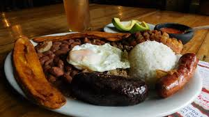

COCINANDO
En comer esta el placer

Historial:
- https://www.elespectador.com/cromos/gastronomia
- https://www.mundorecetas.com/
- https://mx.recepedia.com/
- https://www.delish.com/
- https://www.vix.com/es/comida
- https://www.allrecipes.com/
Bandeja paisa
Publicado el 17 de junio de 2019

La bandeja paisa es un plato herbolario conocido también como bandeja de arriero o bandeja montañera, típico de la Cocina antioqueña, correspondiente a los actuales departamentos de Antioquia, el Viejo Caldas o Eje Cafetero (Caldas, Quindío y Risaralda), parte del norte del Valle del Cauca y el norte del Tolima en Colombia.
Característica fundamental de este plato es su enorme abundancia, tanto en cantidad como en variedad de alimentos, de tal modo que, la bandeja paisa completa solo cabe servirla en platos grandes llamados bandejas.
En su forma y composición actual, es un plato de desarrollo reciente: no aparecen referencias en los libros de cocina anteriores a 1950 ni en otros documentos anteriores a esa fecha. Es probablemente una evolución comercial, desarrollada en los restaurantes antioqueños de Medellín, Bogotá y otros sitios de Colombia, del tradicional "seco" antioqueño, compuesto por arroz, frijol, carne, algo de frito y plátano, y acompañado por arepa. También puede haber evolucionado a partir de otro plato de común usanza en la región, inclusive hoy, conocido ampliamente como "Típico Montañero" o simplemente "Típico".
Ingredientes:
Este plato se sirve en una vajilla amplia, de varias piezas y ovalada (tipo bandeja). En su presentación clásica tradicional o autóctona, está tradicionalmente compuesto por catorce ingredientes invariables; doce de ellos dispuestos en las mencionadas bandejas o platos, y dos más como acompañamiento; son éstos:
- Fríjoles con garra
- Arroz blanco
- Carne en polvo (molida)
- Chicharrón
- Huevo frito
- Patacón
- Chorizo antioqueño con limón
- Arepa antioqueña
- Hogao
- Morcilla
- Tomate rojo en rodajas
- Aguacate.
Ingredientes invariables
- Claro o mazamorra con leche
- Panela molida o "dulce macho".
- Refajo
Acompañamiento
Ginita
Lo mejor que he comido en mi vida.
NRios
Especial para toda ocacion.
lalok
Muy delicioso.
Cocido Boyacense
Publicado el 17 de junio de 2019
La cultura chibcha, fue quien acogió este plato en la época de la colonia, cuando los españoles establecieron en Colombia la llamada “Olla podrida”, uno de los primeros platos preparados por los españoles en la época prehispánica. Este nombre para los españoles significaba la olla del pudiente, decían que se podían incluir todos los ingredientes que se necesitaban.
Hoy el Cocido boyacense es una representación gastronómica de Colombia. El último festival gastronómico realizado en Villa de Leyva para el año 2016, logró posicionar al cocido boyacense como uno de los platos característicos del país. Villa de Leyva es uno de los lugares más populares del departamento de Boyacá para encontrar este plato típico, reconocido a nivel nacional e internacional. (Le puede interesar: Si visitas Boyacá no puedes dejar de comer estos platos)
- Costilla de cerdo,carne de res y gallina
- Criolla
- Papa sabanera
- Arveja
- Habas
- Mazorca
- Cubios
- Hibias
- Chuguas
- Ajo
Ingredientes
Ginita
Lo mejor que he comido en mi vida.
NRios
Especial para toda ocacion.
lalok
Muy delicioso.